Chapitre 5 Gbané (2021), masse de la coquille
5.1 Présentation
Variable explicative :
diet: le régime
Variable expliquée :
shel: la Masse de la coquille (g)
5.2 Les données
##
## -- Column specification --------------------------------------------------------
## cols(
## week = col_character(),
## diet = col_character(),
## egg = col_double(),
## shel = col_double(),
## yol = col_double(),
## alb = col_double(),
## indl = col_double(),
## inda = col_double(),
## indb = col_double(),
## chol_tot = col_double()
## )df <- df %>%
add_column(id = 1:nrow(.), .before = 1) %>%
mutate(week = factor(week),
diet = factor(diet))
df_copy <- df # copie## Rows: 63
## Columns: 11
## $ id <int> 1, 2, 3, 4, 5, 6, 7, 8, 9, 10, 11, 12, 13, 14, 15, 16, 17, 18~
## $ week <fct> Week 3, Week 3, Week 3, Week 3, Week 3, Week 3, Week 3, Week ~
## $ diet <fct> 0.15%B.o_0.45%C.l, 0.15%B.o_0.45%C.l, 0.15%B.o_0.45%C.l, 0.30~
## $ egg <dbl> 10.900, 10.900, 10.840, 11.070, 11.830, 10.940, 10.000, 10.39~
## $ shel <dbl> 1.310, 1.800, 1.350, 1.550, 1.930, 1.900, 1.130, 1.020, 0.980~
## $ yol <dbl> 3.890, 3.750, 3.340, 3.230, 4.040, 2.860, 3.410, 3.890, 3.200~
## $ alb <dbl> 5.700, 5.350, 6.150, 6.290, 5.860, 6.180, 5.460, 5.480, 5.110~
## $ indl <dbl> 82.69, 82.29, 81.92, 80.82, 80.76, 80.42, 83.91, 84.56, 84.21~
## $ inda <dbl> 1.13, 0.69, 0.75, 3.08, 3.32, 2.84, -0.98, -0.28, -0.47, 2.17~
## $ indb <dbl> 56.98, 56.99, 58.25, 68.49, 70.23, 70.96, 45.13, 45.77, 45.39~
## $ chol_tot <dbl> 22.480, 33.990, 20.800, 6.374, 3.727, 3.393, 27.830, 32.980, ~5.3 Semaine 3
5.3.1 Exploration visuelle, boxplots
ggplot(df, aes(x = diet, y = shel)) +
geom_boxplot() +
theme_bw() +
xlab("Régime") + ylab("Masse de la coquille (g)") +
theme(axis.text.x = element_text(angle = 45, color = "black", vjust = 1, hjust = 1))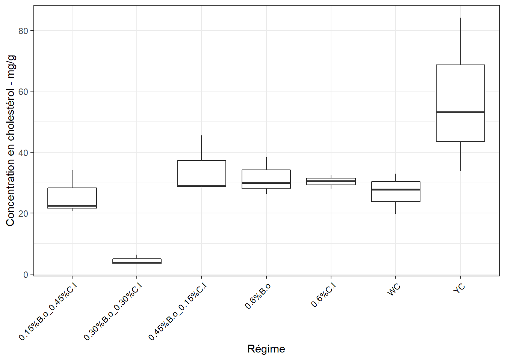
5.3.2 Identification des échantillons aberrants extrêmes
df_out <- df %>%
group_by(diet) %>%
identify_outliers(shel) %>%
dplyr::select(id, diet, shel, is.outlier, is.extreme)
df_out## [1] id diet shel is.outlier is.extreme
## <0 rows> (or 0-length row.names)=> Pas d’observation aberrante extrême
5.3.3 Le modèle ANOVA
## Anova Table (Type II tests)
##
## Response: shel
## Sum Sq Df F value Pr(>F)
## diet 0.92493 6 6.4168 0.002032 **
## Residuals 0.33633 14
## ---
## Signif. codes: 0 '***' 0.001 '**' 0.01 '*' 0.05 '.' 0.1 ' ' 1À ce stade, certains régimes se distinguent par une différence d’effets sur la masse de la coquille. Mais vérifions la validité de l’ANOVA.
5.3.4 Normalité des résidus
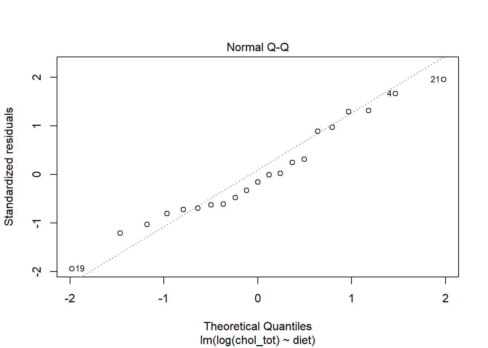
## # A tibble: 1 x 3
## variable statistic p.value
## <chr> <dbl> <dbl>
## 1 residuals(lm) 0.984 0.9705.3.5 Homogénéité des variances
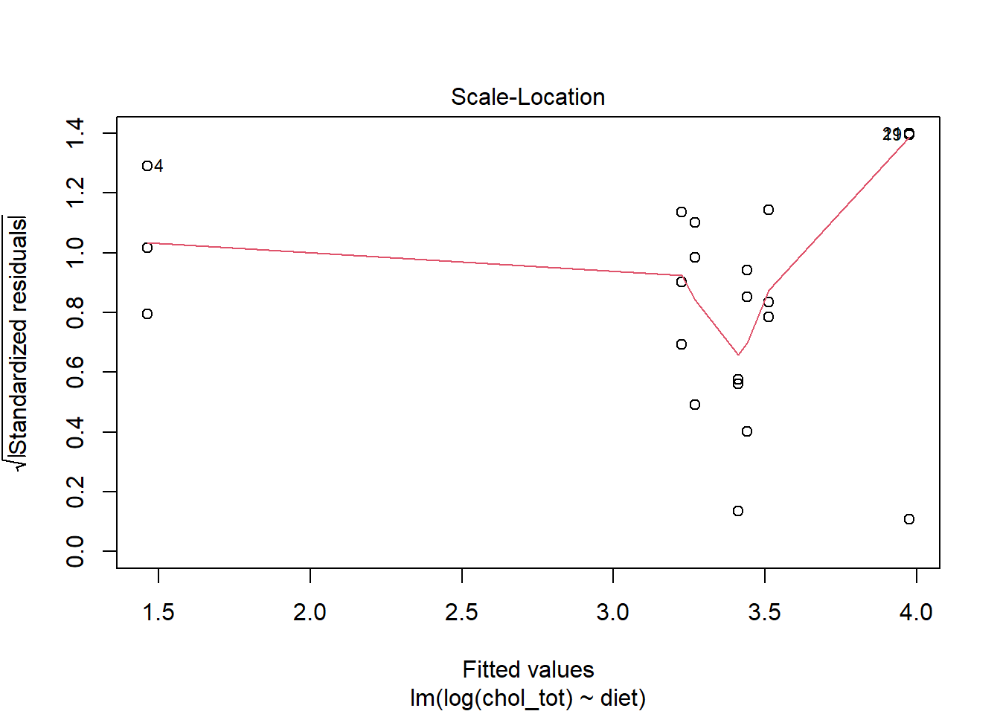
## # A tibble: 1 x 4
## df1 df2 statistic p
## <int> <int> <dbl> <dbl>
## 1 6 14 0.400 0.867On retiendra que la conclusion de l’ANOVA peut être considérée valide : => Différence d’effet significative entre certains régimes sur la masse de la coquille à cette date.
5.3.6 Comparaisons par paires
cm <- (SNK.test(lm, "diet", group = TRUE))$groups %>%
mutate(diet = rownames(.)) %>%
dplyr::select(diet, shel, groups) %>%
as_tibble()
cm## # A tibble: 7 x 3
## diet shel groups
## <chr> <dbl> <chr>
## 1 0.30%B.o_0.30%C.l 1.79 a
## 2 0.15%B.o_0.45%C.l 1.49 b
## 3 0.45%B.o_0.15%C.l 1.35 bc
## 4 0.6%C.l 1.35 bc
## 5 YC 1.33 bc
## 6 0.6%B.o 1.29 bc
## 7 WC 1.04 c5.3.7 Graphe avec les comparaisons
ggplot(cm, aes(x = diet, y = shel)) +
geom_bar(stat = "identity", color = "blue", fill = "grey", width = 0.6) +
ylim(0, 2) +
theme_bw() +
xlab("Régime") + ylab("Masse de la coquille - g") +
theme(axis.text.x = element_text(angle = 45, color = "black", vjust = 1, hjust = 1)) +
geom_text(aes(label = groups), vjust = -0.5, size = 4)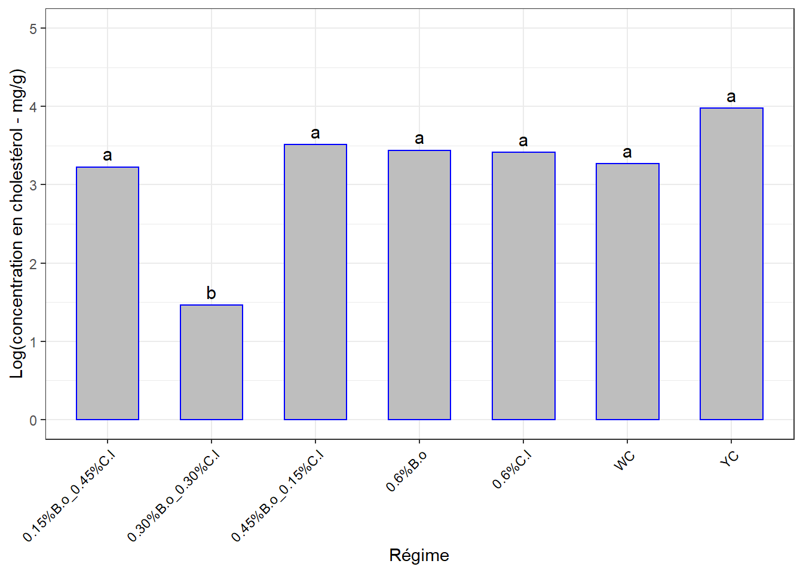
5.4 Semaine 4
5.4.1 Exploration visuelle, boxplots
ggplot(df, aes(x = diet, y = shel)) +
geom_boxplot() +
theme_bw() +
xlab("Régime") + ylab("Masse de la coquille (g)") +
theme(axis.text.x = element_text(angle = 45, color = "black", vjust = 1, hjust = 1))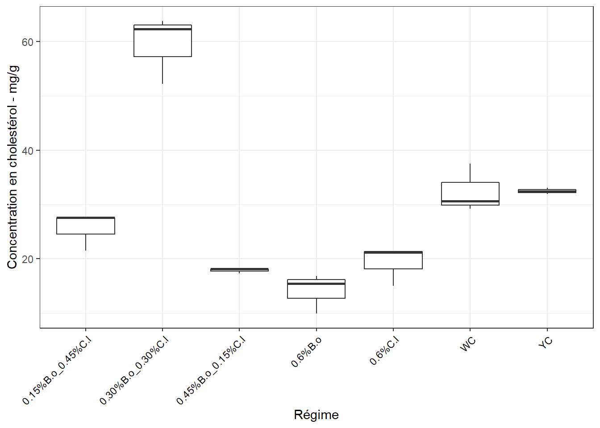
5.4.2 Identification des échantillons aberrants extrêmes
df_out <- df %>%
group_by(diet) %>%
identify_outliers(shel) %>%
dplyr::select(id, diet, shel, is.outlier, is.extreme)
df_out## [1] id diet shel is.outlier is.extreme
## <0 rows> (or 0-length row.names)=> Pas d’observation aberrante extrême
5.4.3 Le modèle ANOVA
## Anova Table (Type II tests)
##
## Response: shel
## Sum Sq Df F value Pr(>F)
## diet 0.21443 6 0.928 0.5046
## Residuals 0.53913 14=> Pas de différence d’effets significatif sur la masse de la coquille. Mais vérifions la validité de l’ANOVA.
5.4.4 Normalité des résidus
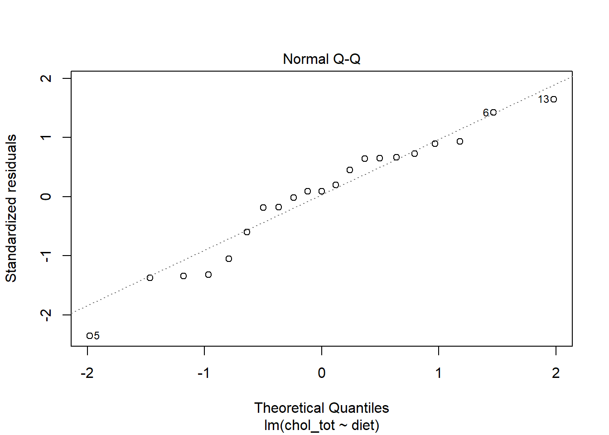
## # A tibble: 1 x 3
## variable statistic p.value
## <chr> <dbl> <dbl>
## 1 residuals(lm) 0.868 0.008705.4.5 Homogénéité des variances
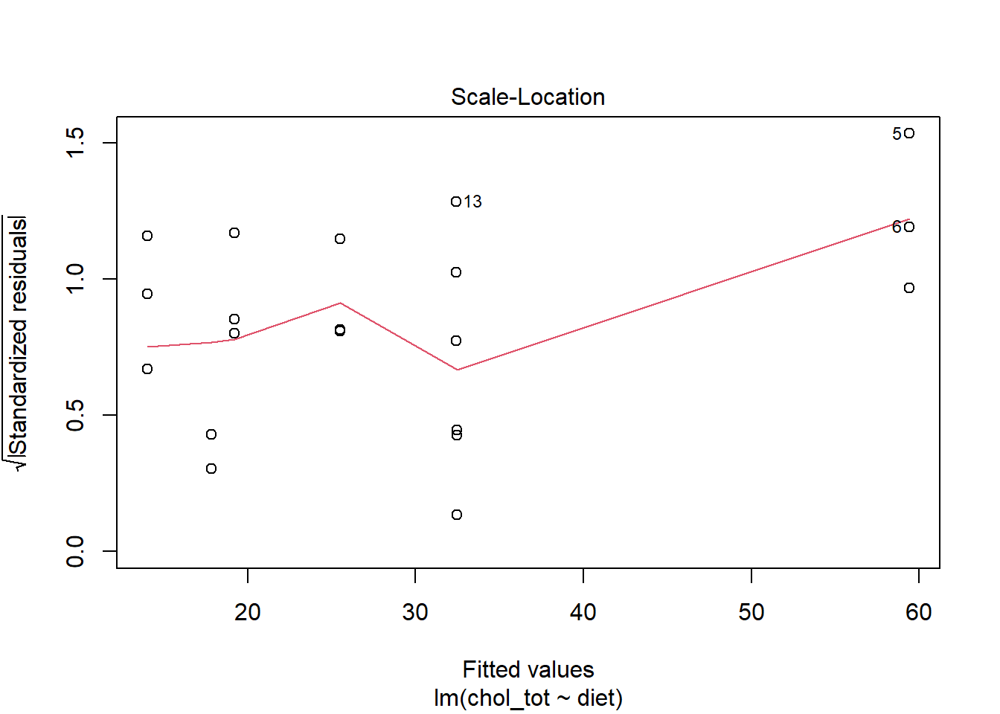
## # A tibble: 1 x 4
## df1 df2 statistic p
## <int> <int> <dbl> <dbl>
## 1 6 14 0.718 0.642=> Conclusion de l’ANOVA discutable : => Passons par Kruskal-Wallis (non-paramétrique) :
## # A tibble: 1 x 6
## .y. n statistic df p method
## * <chr> <int> <dbl> <int> <dbl> <chr>
## 1 shel 21 6.81 6 0.339 Kruskal-Wallis=> Même conclusion, pas de différence d’effets significatif entre les régimes à la semaine 4 sur la masse de la coquille.
df %>%
dunn_test(shel ~ diet, p.adjust.method = "bonferroni") %>%
dplyr::select(group1, group2, p, p.adj, p.adj.signif) #%>% ## # A tibble: 21 x 5
## group1 group2 p p.adj p.adj.signif
## <chr> <chr> <dbl> <dbl> <chr>
## 1 0.15%B.o_0.45%C.l 0.30%B.o_0.30%C.l 0.0564 1 ns
## 2 0.15%B.o_0.45%C.l 0.45%B.o_0.15%C.l 0.693 1 ns
## 3 0.15%B.o_0.45%C.l 0.6%B.o 0.693 1 ns
## 4 0.15%B.o_0.45%C.l 0.6%C.l 0.895 1 ns
## 5 0.15%B.o_0.45%C.l WC 0.792 1 ns
## 6 0.15%B.o_0.45%C.l YC 0.357 1 ns
## 7 0.30%B.o_0.30%C.l 0.45%B.o_0.15%C.l 0.0213 0.447 ns
## 8 0.30%B.o_0.30%C.l 0.6%B.o 0.130 1 ns
## 9 0.30%B.o_0.30%C.l 0.6%C.l 0.0757 1 ns
## 10 0.30%B.o_0.30%C.l WC 0.100 1 ns
## # ... with 11 more rowsJe reconsidère les comparaisons par paires du premier ANOVA pour la visualisation.
5.4.6 Comparaisons par paires
cm <- (SNK.test(lm, "diet", group = TRUE))$groups %>%
mutate(diet = rownames(.)) %>%
dplyr::select(diet, shel, groups) %>%
as_tibble()
cm## # A tibble: 7 x 3
## diet shel groups
## <chr> <dbl> <chr>
## 1 0.30%B.o_0.30%C.l 1.55 a
## 2 0.15%B.o_0.45%C.l 1.43 a
## 3 YC 1.37 a
## 4 0.6%B.o 1.34 a
## 5 WC 1.29 a
## 6 0.6%C.l 1.28 a
## 7 0.45%B.o_0.15%C.l 1.22 a5.4.7 Graphe avec les comparaisons
ggplot(cm, aes(x = diet, y = shel)) +
geom_bar(stat = "identity", color = "blue", fill = "grey", width = 0.6) +
ylim(0, 2) +
theme_bw() +
xlab("Régime") + ylab("Masse de la coquille - g") +
theme(axis.text.x = element_text(angle = 45, color = "black", vjust = 1, hjust = 1)) +
geom_text(aes(label = groups), vjust = -0.5, size = 4)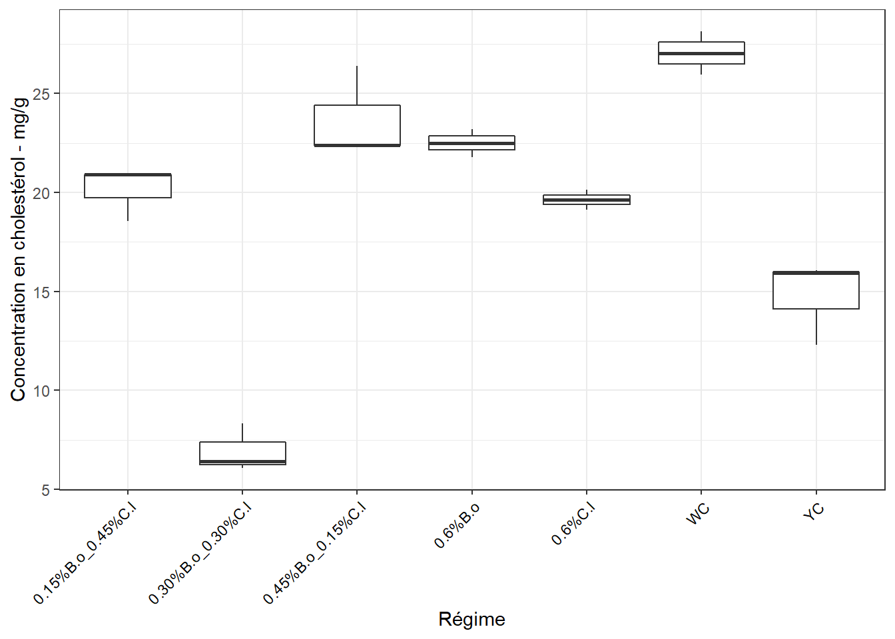
5.5 Semaine 5
5.5.1 Exploration visuelle, boxplots
ggplot(df, aes(x = diet, y = shel)) +
geom_boxplot() +
theme_bw() +
xlab("Régime") + ylab("Masse de la coquille (g)") +
theme(axis.text.x = element_text(angle = 45, color = "black", vjust = 1, hjust = 1))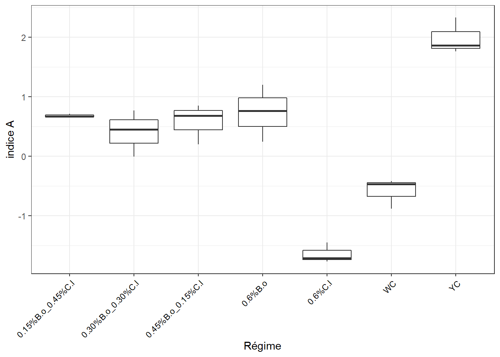
5.5.2 Identification des échantillons aberrants extrêmes
df_out <- df %>%
group_by(diet) %>%
identify_outliers(shel) %>%
dplyr::select(id, diet, shel, is.outlier, is.extreme)
df_out## [1] id diet shel is.outlier is.extreme
## <0 rows> (or 0-length row.names)=> Pas d’observation aberrante extrême
5.5.3 Le modèle ANOVA
## Anova Table (Type II tests)
##
## Response: shel
## Sum Sq Df F value Pr(>F)
## diet 0.25479 6 0.766 0.6086
## Residuals 0.77610 14=> Ici, également pas de différence d’effets significatif sur la masse de la coquille. Mais vérifions la validité de l’ANOVA.
5.5.4 Normalité des résidus
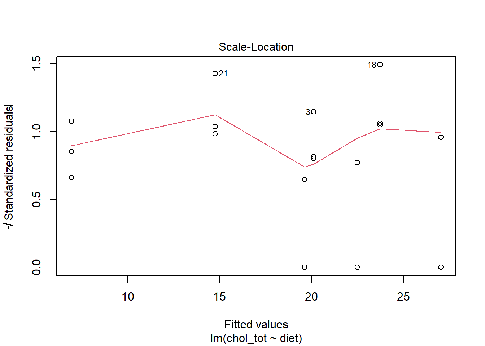
## # A tibble: 1 x 3
## variable statistic p.value
## <chr> <dbl> <dbl>
## 1 residuals(lm) 0.970 0.7375.5.5 Homogénéité des variances
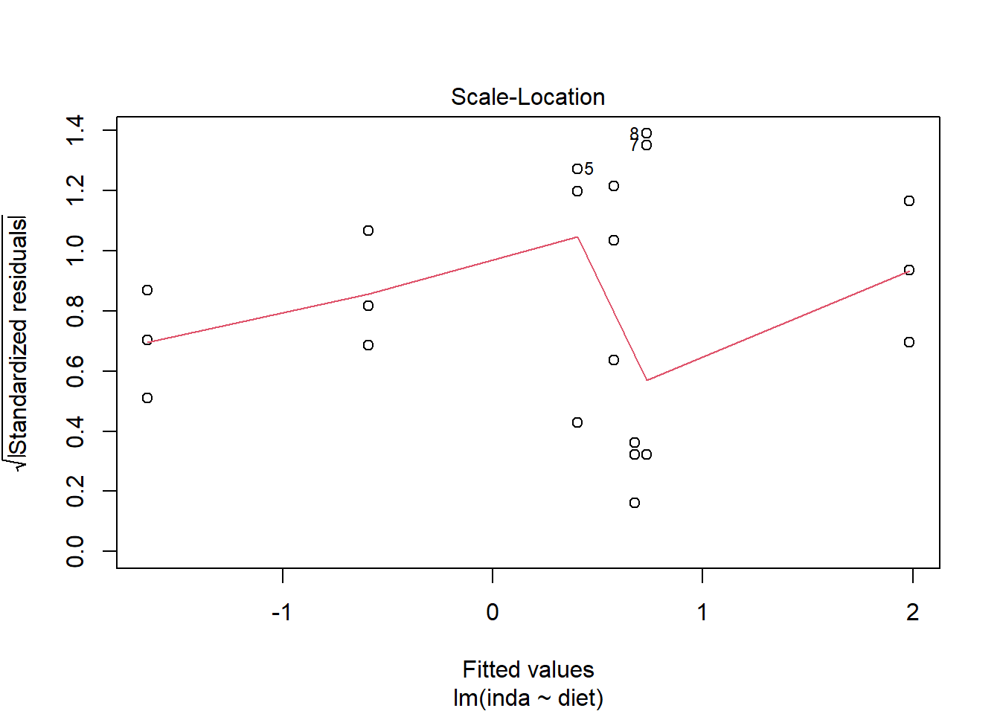
## # A tibble: 1 x 4
## df1 df2 statistic p
## <int> <int> <dbl> <dbl>
## 1 6 14 0.715 0.644Je passe par le non-paramétrique vu la figure précédente.
## # A tibble: 1 x 6
## .y. n statistic df p method
## * <chr> <int> <dbl> <int> <dbl> <chr>
## 1 shel 21 3.37 6 0.762 Kruskal-Wallis=> Même conclusion, pas de différence d’effets significatif entre les régimes à la semaine 5 sur la masse de la coquille.
df %>%
dunn_test(shel ~ diet, p.adjust.method = "bonferroni") %>%
dplyr::select(group1, group2, p, p.adj, p.adj.signif) #%>% ## # A tibble: 21 x 5
## group1 group2 p p.adj p.adj.signif
## <chr> <chr> <dbl> <dbl> <chr>
## 1 0.15%B.o_0.45%C.l 0.30%B.o_0.30%C.l 0.947 1 ns
## 2 0.15%B.o_0.45%C.l 0.45%B.o_0.15%C.l 0.621 1 ns
## 3 0.15%B.o_0.45%C.l 0.6%B.o 0.392 1 ns
## 4 0.15%B.o_0.45%C.l 0.6%C.l 0.869 1 ns
## 5 0.15%B.o_0.45%C.l WC 0.410 1 ns
## 6 0.15%B.o_0.45%C.l YC 0.869 1 ns
## 7 0.30%B.o_0.30%C.l 0.45%B.o_0.15%C.l 0.576 1 ns
## 8 0.30%B.o_0.30%C.l 0.6%B.o 0.357 1 ns
## 9 0.30%B.o_0.30%C.l 0.6%C.l 0.921 1 ns
## 10 0.30%B.o_0.30%C.l WC 0.449 1 ns
## # ... with 11 more rows5.5.6 Comparaisons par paires
cm <- (SNK.test(lm, "diet", group = TRUE))$groups %>%
mutate(diet = rownames(.)) %>%
dplyr::select(diet, shel, groups) %>%
as_tibble()
cm## # A tibble: 7 x 3
## diet shel groups
## <chr> <dbl> <chr>
## 1 0.6%B.o 1.57 a
## 2 YC 1.4 a
## 3 0.45%B.o_0.15%C.l 1.36 a
## 4 0.15%B.o_0.45%C.l 1.33 a
## 5 0.30%B.o_0.30%C.l 1.28 a
## 6 0.6%C.l 1.27 a
## 7 WC 1.19 a5.5.7 Graphe avec les comparaisons
ggplot(cm, aes(x = diet, y = shel)) +
geom_bar(stat = "identity", color = "blue", fill = "grey", width = 0.6) +
ylim(0, 2) +
theme_bw() +
xlab("Régime") + ylab("Masse de la coquille (g)") +
theme(axis.text.x = element_text(angle = 45, color = "black", vjust = 1, hjust = 1)) +
geom_text(aes(label = groups), vjust = -0.5, size = 4)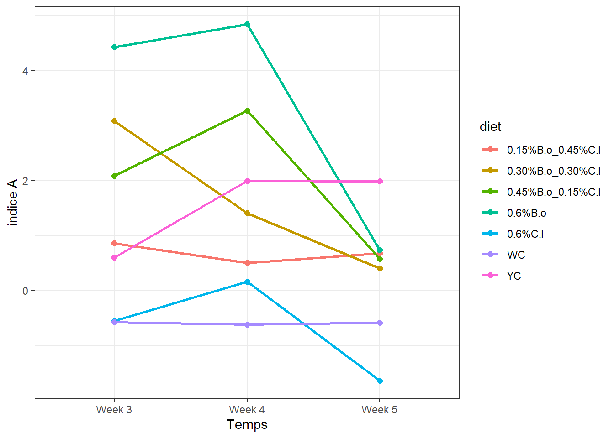
5.5.8 Évolution de la Masse de la coquille dans le temps selon les régimes
df_ic <- summarySE(df_copy,
measurevar = "shel",
groupvars = c("week", "diet"))
#write_csv(df_ic, "tab/shel_moy_temps.csv")
df_ic## week diet N shel sd se ci
## 1 Week 3 0.15%B.o_0.45%C.l 3 1.486667 0.272090671 0.157091622 0.67591070
## 2 Week 3 0.30%B.o_0.30%C.l 3 1.793333 0.211266025 0.121974496 0.52481390
## 3 Week 3 0.45%B.o_0.15%C.l 3 1.346667 0.145716620 0.084129530 0.36198015
## 4 Week 3 0.6%B.o 3 1.290000 0.130766968 0.075498344 0.32484316
## 5 Week 3 0.6%C.l 3 1.346667 0.056862407 0.032829526 0.14125405
## 6 Week 3 WC 3 1.043333 0.077674535 0.044845413 0.19295424
## 7 Week 3 YC 3 1.330000 0.043588989 0.025166115 0.10828105
## 8 Week 4 0.15%B.o_0.45%C.l 3 1.429000 0.432160850 0.249508183 1.07354706
## 9 Week 4 0.30%B.o_0.30%C.l 3 1.552000 0.069000000 0.039837169 0.17140550
## 10 Week 4 0.45%B.o_0.15%C.l 3 1.224333 0.008621678 0.004977728 0.02141744
## 11 Week 4 0.6%B.o 3 1.338000 0.240000000 0.138564065 0.59619305
## 12 Week 4 0.6%C.l 3 1.283667 0.071037549 0.041013548 0.17646705
## 13 Week 4 WC 3 1.287667 0.105310652 0.060801133 0.26160616
## 14 Week 4 YC 3 1.369333 0.065056386 0.037560322 0.16160902
## 15 Week 5 0.15%B.o_0.45%C.l 3 1.330000 0.242487113 0.140000000 0.60237138
## 16 Week 5 0.30%B.o_0.30%C.l 3 1.280000 0.125299641 0.072341781 0.31126156
## 17 Week 5 0.45%B.o_0.15%C.l 3 1.356667 0.147422296 0.085114302 0.36621728
## 18 Week 5 0.6%B.o 3 1.566667 0.390170903 0.225265276 0.96923825
## 19 Week 5 0.6%C.l 3 1.270000 0.121655251 0.070237692 0.30220840
## 20 Week 5 WC 3 1.194667 0.056438757 0.032584932 0.14020165
## 21 Week 5 YC 3 1.400000 0.348711915 0.201328918 0.86624842ggplot(df_ic, aes(x = week, y = shel, colour = diet, group = diet)) +
geom_line(size = 1) +
geom_point(size = 2) +
ylab("Masse de la coquille - g") + xlab("Temps") +
theme_bw()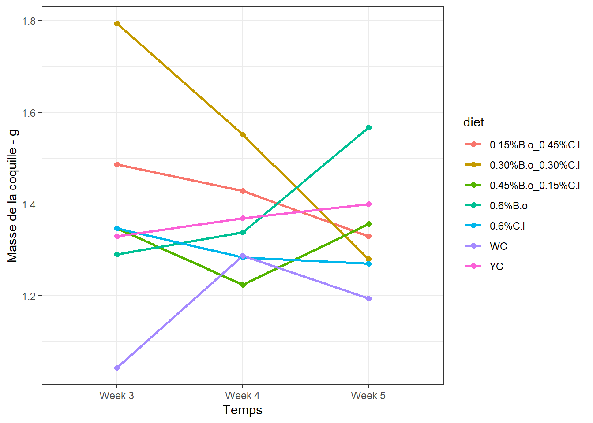
Figure impressionnante, mais tenir compte des valeurs de l’axe des ordonnées. Nous sommes dans le gramme en plus !